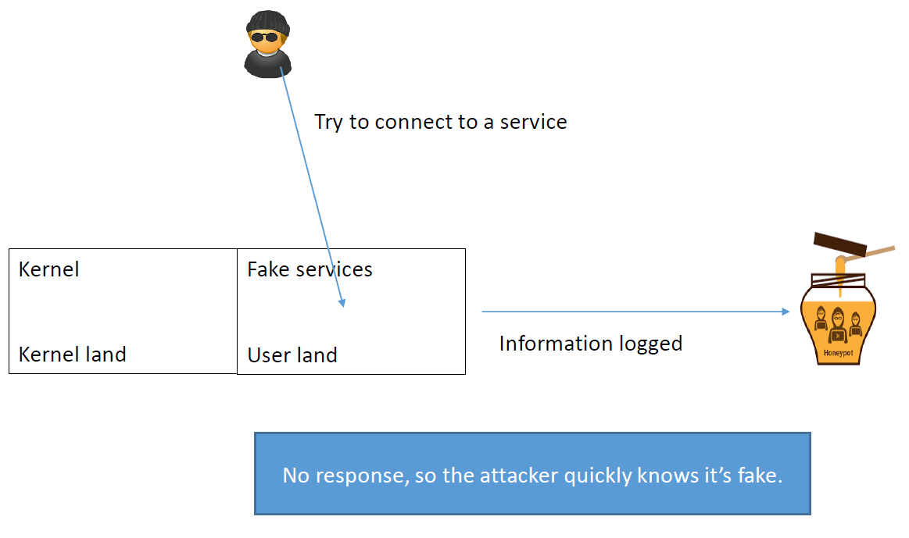
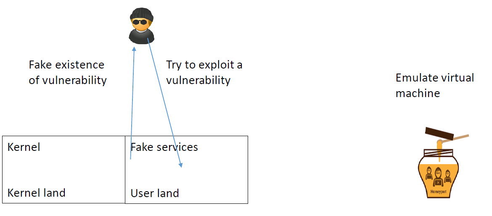
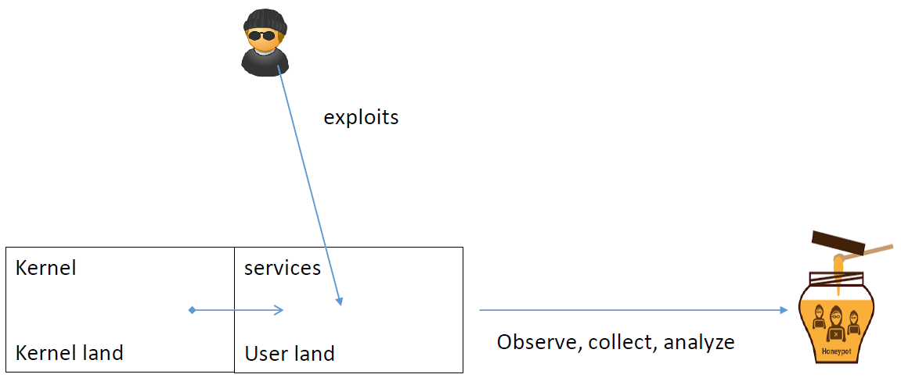
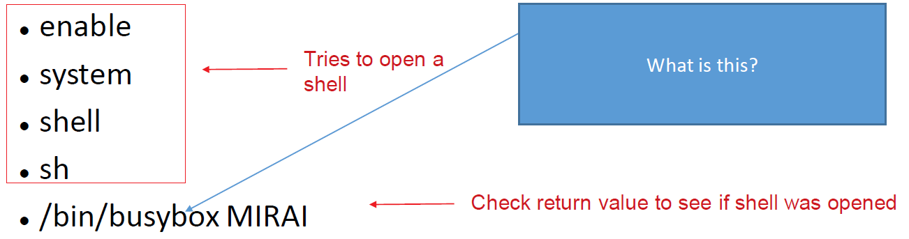

How to obtain malware sample ? The honey pot approach¶
Catching malware samples¶
Honeypots¶
A honeypot is a system that is intentionally left vulnerable to catch attacks and malware and study their behavior. The honeypot records the behavior of the attacker and saves all the files dropped to an external location, then reflashes itself. Idea attributed to Bill Cheswick , played with a pirate who was exploiting a vulnerability in the sendmail daemon (1991).
Objectives¶
Let the attacker believe that she can control the system. This allows the administrator to observe what the attacker uses to compromise the system.
- Spies the network
- Collect informations
- Analyse information
Different level of control: weak , middle and strong interactions.
Weak interactionsEmulate services, but offer no response. Allows us to perform statistic:
- Which port is under attack?
- Which malware (in case information is in first packet)?
Example:netcatthat listen to a port and log all commands sent by attacker.Others: honeytrap
- Middle interactions Problem with weak interaction: no response.Solution: Middle interaction:
- respond with what the attacker expects (emulates a dedicated service)
- She trusts it and send more
- Payload is analyzed in a virtual machine (not always easy to put in place!)

Example:
nepenthes- Web server IIS with webdav known to be vulnerable to buffer overflow (2003)
- Implement fake version that let the attacker exploit the vulnerability
- In case attacker exploits vulnerability, emulate a virtual machine to analyse the content
- Strong interactions Middle interaction problem: it is not difficult to detect if we are in a virtual environment.Solution: Let the attacker to have access to the full system
- Allows us to discover new attacks
- More dangerous as the full system is vulnerable
- But very useful to detect new types of attacks

Some great tutorial:¶
Some honey pots¶
Dionaea: against worms, effective for WannaCry
The case of Mirai¶
The Mirai flow of attack is known.
- What we hunt: the code deployed depending on the architecture
- Objective: to catch different versions to study variants of the malware
- To generate different malware signatures! (or even to predict new ones)
Again, the interesting part is the code that is deployed. We do not need to let the code be executed, just catch it!
- Conclusion: A middle interaction honeypot is sufficient
The Cowrie honey pot can be used to emulates an ARM IoT device. We assume that this device accepts all connections attempts and store any attempt to load a file into the honey pot.
How to catch a Mirai¶
- Bot scan How do you recognize when an attack comes from a Mirai bot?Connects to port 23 (Telnet), tries to login with hardcoded usernames and passwords, if successful runs the following commands:If the commands above succeed, a Mirai server will contact you next.
busyboxis file that emulate many version of linux.
- C&C server attackThe Mirai server will connect with the same credentials and execute:

It try to have information about the mounted system since it try to inject the mirai payload but the only way to do this is to write something in you.
Server attack Each mounted file system <DIR> found is tested for writability by trying to write a file on it and see if its content matches:
echo -e '\\x6b\\x61\\x6d \\x69 <DIR>'> <./nippon/busybox cat> <DIR>/.nippon/busybox rm <DIR>/.nipponIf it finds a writable <DIR> it moves to it and analyzes
/bin/echoand/proc/cpuinfoto determine the CPU architecture (to adapt and know if victim is good candidate):cd <DIR> /busybox cp /bin/echo dvrHelper dvrHelper /busybox chmod 777 > dvrHelper /busybox ECCHI cat /proc/ cpuinfo
Finally, the Mirai server uses
wgetortftpto download and execute the Mirai downloader for the correct architecture. The downloader downloads and executes the Mirai bot for the correct architecture …so your honeypot will record all the instructions executed by Mirai bot, server, and downloader, and samples of the downloader and bot, and save all of them somewhere for further analysis. Then the honeypot with reflash itself to disinfect itself. That’s how you collect malware samples and make sure it’s Mirai.
From observation to analysis and detection¶
- Honeypots are there to spy, collect, analyse
- They lure the attacker
- They are not intrusion detection systems/anti-virus (study, no reaction)
- Indeed, its up to you to decide if honeypot content correspond to a malicious action
- This information can be used to feed a malware analysis system